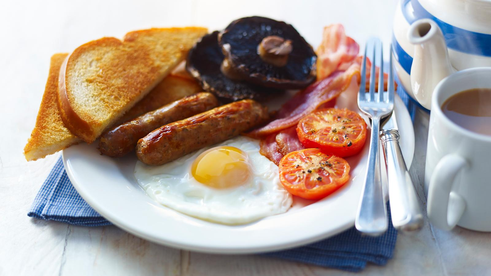

English Breakfast Recipe

Recipe Description
Make a simple English breakfast by pan-frying
sausages and bacon, then cooking the eggs, tomatoes, mushrooms, and warming the baked beans.
Ingredients
- 4 pork sausages
- 4 rashers of bacon
- 2 eggs
- Baked Beans
- 1 Tomato
- Sliced Mushrooms
- 2 slices of bread
- Oil
- Salt and pepper
How to: All the steps
-
Cook the sausages: Heat a little oil in a large frying pan over medium heat. Add the sausages and cook for 10 to 12 minutes,
-
Fry the bacon: In the same pan, add the bacon rashers. Cook for 2 to 3 minutes per side until done to your liking.
-
Cook mushrooms and tomatoes: Place the halved tomatoes (cut-side down) and sliced mushrooms into the pan.
Season lightly with salt and pepper. Cook for 3 to 4 minutes until softened and slightly charred.
-
Warm the beans: Heat the baked beans gently in a small saucepan over low heat, stirring occasionally.
-
Cook the Eggs and Bread: Fry your eggs in the pan sunny-side up.
Toast the bread separately, or fry it in a bit of butter in the pan for an authentic touch.
-
Serve: Arrange all the hot components together on warm plates.
Home